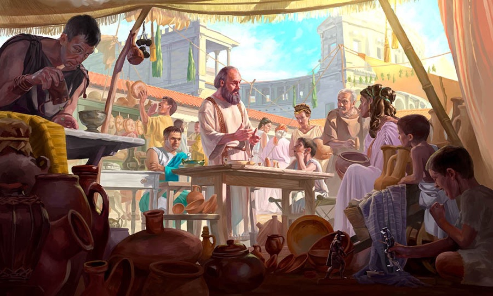

பின்னணி · கி.பி. 50-52கலாத்தியாவில் என்ன நடந்துகொண்டிருந்தது?

சில வருஷங்களுக்கு முன், பவுலும் பர்னபாவும் தெற்கு கலாத்தியாவில் சபைகளை உருவாக்கினார்கள் (அப் 13, 14). பிறகு சீலாவோடு மறுபடியும் போனபோது சபைகள் “விசுவாசத்தில் உறுதியாகி, நாளுக்கு நாள் பெருகின” (அப் 16:5).
ஆனால் பவுல் போன பிறகு, சிலர் சபைக்குள் வந்து இப்படிச் சொன்னார்கள்: “இயேசுவை நம்பினால் மட்டும் போதாது. விருத்தசேதனம் செய்ய வேண்டும், மோசேயின் திருச்சட்டத்தைக் கடைப்பிடிக்க வேண்டும்.” அதோடு, “பவுல் உண்மையான அப்போஸ்தலர் இல்லை” என்றும் சொல்லியிருக்கலாம். எருசலேமிலுள்ள அப்போஸ்தலர்களும் மூப்பர்களும் இந்த விஷயத்தை ஏற்கெனவே தீர்த்திருந்தும் (அப் 15:23-29) இவர்கள் விடவில்லை.
எளிமையாகச் சொன்னால்கலாத்தியர் சபைகள் இரண்டு கேள்விகளோடு நின்றன: (1) பவுல் சொன்னது முழுமையானதா, அல்லது இன்னும் ஏதாவது சேர்க்க வேண்டுமா? (2) பவுல் உண்மையிலேயே கடவுளால் அனுப்பப்பட்டவரா? அதிகாரம் 1 இந்த இரண்டுக்கும் பதில் சொல்கிறது.